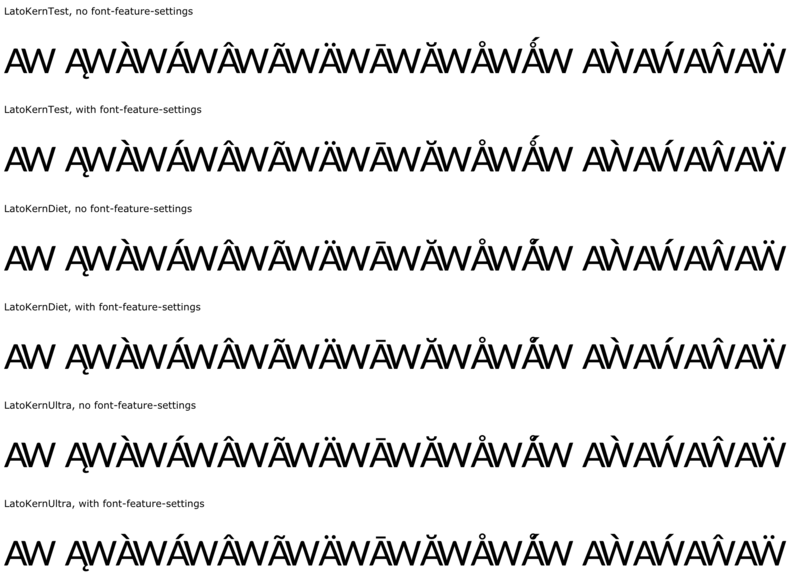
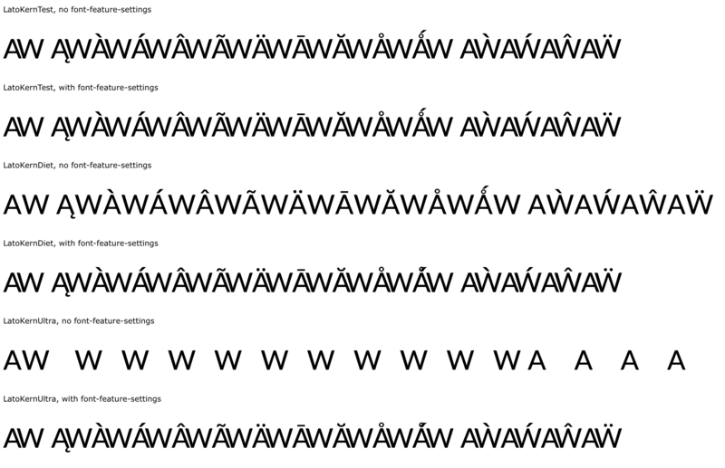
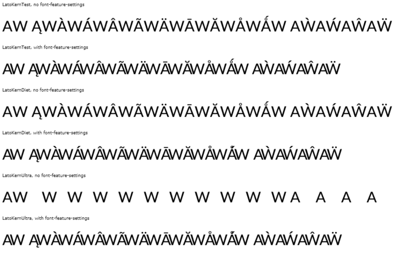

Note: the Aringacute (Ǻ) rendering with the acute and ring overlapping in the dieted tests is as intended, since the font does not have the 'mkmk' feature.
LatoKernTest, no font-feature-settings
LatoKernTest, with font-feature-settings
LatoKernDiet, no font-feature-settings
LatoKernDiet, with font-feature-settings
LatoKernUltra, no font-feature-settings
LatoKernUltra, with font-feature-settings


